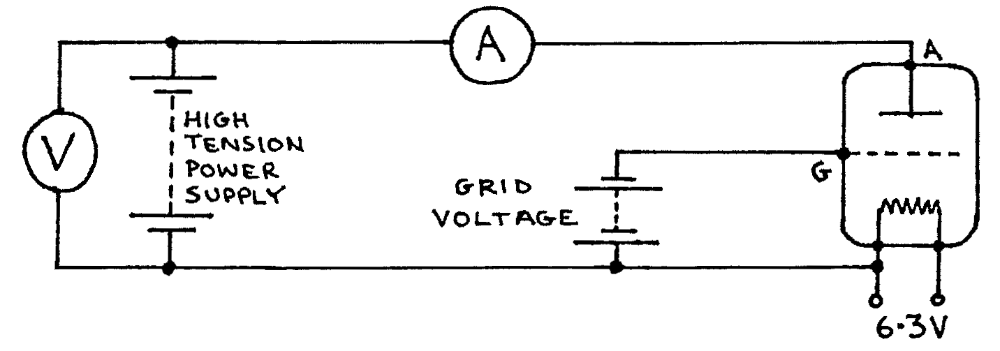
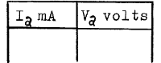
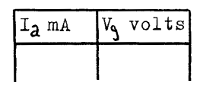
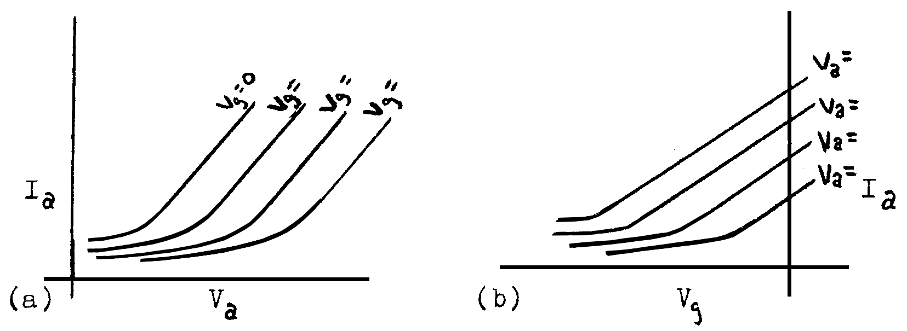

G1-1: Measuring Triode Characteristics¶
Apparatus¶
DC power supply \(0-800\text{V}\); voltmeter \(0-800\text{V}\); cathode heater circuit (in power supply); planar triode (e.g.: TEL 521); 6 dry cells as grid voltage source; sensitive ammeter \(0.01-0.8\text{m}\).; 9 connecting wires; 2 sheets of graph paper.

Procedure¶
Check the circuit to see it agrees with the drawing above. The power supply is off. Always be certain the power supply is off before you change circuit connections. Failure to do this may cause injury or damage to the equipment.
Set the grid voltage at \(-9\text{V}\) (six dry cells in series). Set the power supply dial at zero. Turn on the power supply and slowly increase the anode potential by turning the power supply dial until the voltmeter shows 100text{V}`. Record anode potential, \(V_a\), and anode current, \(I_a\), for \(V_a = 100, 200, 300, 400, 500, \text{ and } 600\text{V}\).
NOTE the ammeter while you increase the anode potential. If the ammeter goes off scale, STOP increasing the potential difference and go on to the next step.
Turn the power supply off.
Change the grid potential, \(V_g\), to \(-6\text{V}\) then repeat procedure (2).
Change \(V_g\) to \(-4.5\text{V}\) and repeat procedure 2.
change \(V_g\) to \(-3\text{V}\) and repeat procedure 2.
Change \(V_g\) to \(-1.5\text{V}\) and repeat procedure 2.
Make 5 more data tables of \(V_g\) and \(I_a\), with \(V_a\) constant. Use the data from the procedure above for \(V_a = 100, 200, 300, 400, \text{ and } 500\text{V}\).
Observations¶
Tabulate:
\(I_a\) and \(V_a\) for each of the 5 values of \(V_g\) constant:
\(V_g\) = ______ V

\(I_a\) and \(V_g\) for the first 5 values of \(V_a\) constant:
\(V_a\) = ______ V

Theory¶

From the slope of the linear part of graph (a) the anode resistance is:
From the linear part of graph (b), the mutual conductance, \(g_m\), is:
The amplification factor, \(\mu\), can be found by comparing \(V_a\) and \(V_g\) over similar intervals of \(I_a\) on the graphs:
or:
Analysis¶
- Plot \(I_a\) vs. \(V_a\) for all values of \(V_g\) on the same axes.
- Plot \(I_a\) vs. \(V_g\) for all values of \(V_a\) on the same axes.
- From your graphs find \(R_a\), \(g_m\), and \(\mu\).